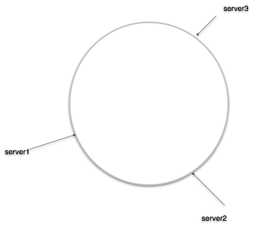

一些场景希望同样的请求尽量落到一台机器上，比如访问缓存集群时，我们往往希望同一种请求能落到同一个后端上，以充分利用其上已有的缓存，不同的机器承载不同的稳定 working set；而不是随机地散落到所有机器上，那样的话会迫使所有机器缓存所有的内容，最终由于存不下形成颠簸而表现糟糕。
我们都知道 hash 能满足这个要求，比如当有 n 台服务器时，输入 x 总是会发送到第 hash(x) % n 台服务器上。但当服务器变为 m 台时，hash(x) % n 和 hash(x) % m 很可能都不相等，这会使得几乎所有请求的发送目的地都发生变化。如果目的地是缓存服务，所有缓存将失效，继而对原本被缓存遮挡的数据库或计算服务造成请求风暴，触发雪崩。一致性哈希是一种特殊的哈希算法，在增加服务器时，发向每个老节点的请求中只会有一部分转向新节点，从而实现平滑的迁移。一致性 hash 的概念源于 Consistent Hashing and Random Trees 这篇论文。
一致性 hash 的四个性质
一致性 hash 满足以下四个性质：
- 平衡性（Balance）：哈希结果尽可能均匀地分布到所有节点上，使所有节点都能得到利用。
- 单调性（Monotonicity）：当有新节点加入时，已有的映射关系保持不变，只会有一部分请求被转移到新节点上。
- 分散性（Spread）：不同客户端对相同内容的哈希结果应当一致，尽量避免同一份内容被映射到不同的节点上。
- 负载（Load）：对同一个节点而言，不同客户端映射到它上面的负载应当接近，避免负载集中到少数客户端视图上。
哈希环与虚拟节点
所有 server 的 32 位 hash 值在 32 位整数值域上构成一个环（Hash Ring），环上的每个区间和一个 server 唯一对应，如果一个 key 落在某个区间内，它就被分流到对应的 server 上。

当删除一个 server 时，它对应的区间会归属于相邻的 server，所有的请求都会跑过去；当增加一个 server 时，它会分割某个 server 的区间并承载落在这个区间上的所有请求。单纯使用 Hash Ring 很难满足上面提到的性质，主要两个问题：环上的区间划分难以做到均匀，节点较少时尤为明显；增删节点时的请求迁移范围也可能过大。
为了解决这个问题，我们为每个 server 计算 m 个 hash 值，从而把 32 位整数值域划分为 n*m 个区间，当 key 落到某个区间时，分流到对应的 server 上。那些额外的 hash 值使得区间划分更加均匀，被称为虚拟节点（Virtual Node）。当删除一个 server 时，它对应的 m 个区间会分别合入相邻的区间中，那个 server 上的请求会较为平均地转移到其他 server 上；当增加 server 时，它会分割 m 个现有区间，从对应 server 上分别转移一些请求过来。
实现
由于节点故障和变化不常发生，我们选择了修改复杂度为 O(n) 的有序数组来存储 hash ring，每次分流使用二分查找来选择对应的机器。由于存储是连续的，查找效率比基于平衡二叉树的实现高。线程安全性则和所有负载均衡器一样，基于 DoublyBufferedData 实现。
使用
我们内置了分别基于 murmurhash3 和 md5 两种 hash 算法的实现（c_murmurhash 和 c_md5），使用要做两件事：
- 在
Channel.Init中把 load_balancer_name 指定为c_murmurhash或c_md5； - 为每个请求设置 32 位的 hash 值。
request 的 hash 算法并不需要和 lb 的 hash 算法保持一致，只需要 hash 的值域是 32 位无符号整数。由于 memcache 默认使用 md5，访问 memcached 集群时请选择 c_md5 保证兼容性，其他场景可以选择 c_murmurhash 以获得更高的性能和更均匀的分布。
通过 -chash_num_replicas 可设置默认的虚拟节点个数，默认值为 100。对于某些特殊场合，对虚拟节点个数有自定义的需求，可以通过将 load_balancer_name 加上参数 replicas= 配置，如：
channel.Init("http://...", "c_murmurhash:replicas=150", &options);